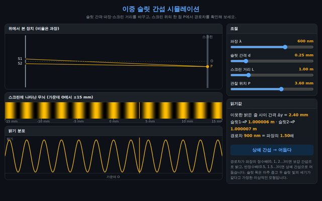
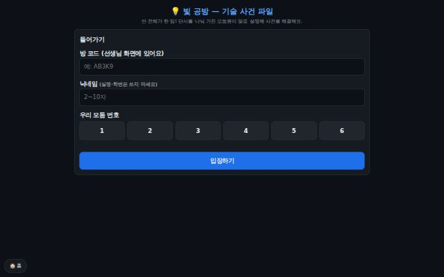

〰️
이중 슬릿 간섭 — 경로차에서 내 실험 비교까지
영이 안내 · 수업자료와 연결된 5단계 경로차 학습(첫 탭) · 무늬 간격 Δy = λL/d · 슬릿 폭과 회절 · 이중·단일 슬릿, 회절격자, 용수철(DNA처럼 나선의 X자 무늬) 실험값과 이론 비교
조절파장 λ·슬릿 간격 d·슬릿 폭 a·스크린 거리 L·관찰 위치 P, 내 측정 거리 입력
관찰경로차(파장의 몇 배), 무늬 간격, 회절 곡선, 이론값과 측정값의 오차
✔ 완료

💡
빛 공방 — 기술 사건 파일 (협력 보드게임)
모둠원이 단서를 나눠 갖고 말로 설명해 푸는 학급 협력 게임(모둠 1~6명) · 1막 빛의 중첩과 간섭 · 2막 빛의 굴절 · 3막 빛과 물질의 이중성(막마다 사건 4~5건) · 선생님이 방 코드를 열어야 시작 · 태블릿
조절방 코드·닉네임·모둠 번호 입력, 단서 설명하며 답 제출, 막힌 모둠에 힌트
관찰경로차 조건·무늬 간격·무반사 코팅·간섭계 길이 측정·렌즈의 상·VR·반도체 노광 축소·광전 효과·전자 현미경·이미지 센서
✔ 1~3막 완료